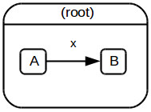
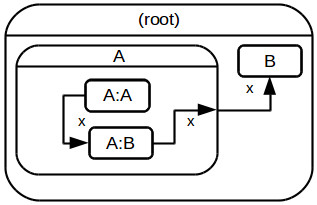
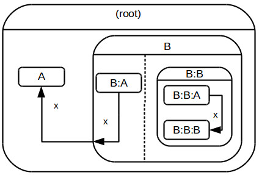
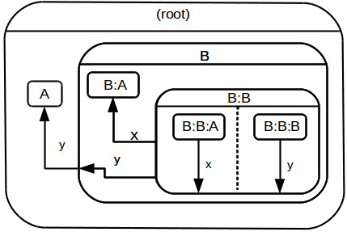
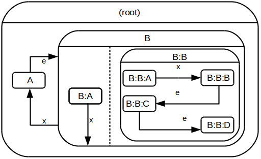

This chapter describes types of allowed transitions.
To another node of a graph

This is the simplest transition. If the current node is A, then following the x arrow will set it to B.
This is what the code looks like:
{
type: "graph",
start: "A",
arrows: {
A: { x: "B" }
},
nodes: { A, B }
}
To a node on a higher level

Let's forget for a moment about everything around the A graph and focus just on that graph. It looks very similar to the case mentioned in the previous example - To another node of a graph. If the A:A node follows the x arrow, it goes to the A:B node.
But what happens if the A:B node follows the x arrow? Within the A graph the x arrow going from the A:B node is not connected to any other node. An arrow like that leaves the parent of the node that follows it. That's why on the diagram there's an arrow to the border of the A graph. From the point of view of the (root) graph it is the A node that follows the x arrow.
So following the x arrow by the A:B sets the current node to B.
After the A graph is left by following an arrow by the A:B node, the A:B node becomes its new entry node. So if we follow an arrow to the A node, it will go into the A:B node, even if previously the initial node was the A:A node.
Simultaneous transitions on different levels

Here we have a composite B, so both B:A and B:B nodes are active at the same time. If we are currently in nodes B:A, B:B:A, then following the x arrow sets the current node to A. Even though B is not active anymore, a regular transition from B:B:A to B:B:A took place. It means all the node and transition actions were executed. Entering the B node again will mean entering nodes B:A, B:B:B.
Leaving one node to few nodes on different levels

Because nodes B:B:A and B:B:B are active in the same time, they may both follow two different arrows. From the perspective of the B graph it looks like the B:B node is following two different arrows simultaneously.
Even though it may look weird, there's no need to panic. Everything is fine, because it's not a situation when two nodes of the same graph are entered.
Following the x arrow will leave the B:B node and set the current node of the B graph to B:A and following the y arrow will leave the whole B graph and set the current node of the (root) graph to A.
So the result node is A and entering B will actually enter B:A.
Transitions among left nodes

Let's assume the current nodes of the model are B:A, B:B:A. All the e arrows are the arrows automatically followed by the on_entry methods as soon as the node is entered.
So following the x arrow will change the current nodes from B:A, B:B:A to B:A, B:B:D. In the meantime B:A, B:B:A, B:B:B, B:B:C and A will be left. Bear in mind it's not going to be the same B:A node anymore. It will have another ID, because the previous one has been left.